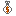
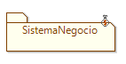
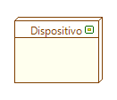
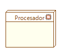

Este perfil es el encargado del estudio y
diseño de soluciones para la creación y mejoramiento de sistemas, para
este caso los especialmente relacionados con soluciones de software.
Este perfil permite etiquetar los nodos en cualquier digrama donde se
encuentre el artefacto "Sistema":
- Sistema de Negocio: Identifica un
sistema ligado al negocio de la organización, se representa como se observa en la Figura 1.

Figura 1. Caracterización de un sistema como Sistema de Negocio
Bajo este perfil también es posible etiquetar nodos en el diagrama de
emplazamiento:
- Nodo Dispositivo: Indica un
dispositivo físico como un equipo de red, un disco de persistencia, un
equipo de captura de datos, etc. En la Figura 2 se aprecia un nodo caracterizado como Dispositivo.

Figura 2. Representación de Nodo Dispositivo
- Nodo
Procesador: Es un nodo con capacidad de procesamiento como por
ejemplo un procesador en un computador de sobremesa, servidor, bastidor de servidores, nube o en
embebido en un dispositivo. La Figura 3 muestra un Nodo Procesador en Coloso.

Figura 3. Nodo Procesador